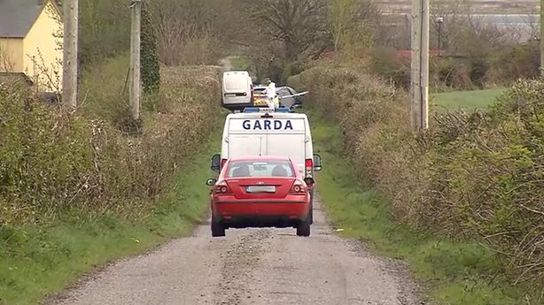

FLEMING-O CORP.
Putting the "new" in news!
TOP STORIES
.jpeg)
Massive win for Ballinrobe Community School in the All-Ireland Finals over the weekend. Future Mayo players on the team?
Gobshites still on strike. Causes author of article to walk many distances.
'Gas' Attack Kills 58 in Rebel Syrian Town.
A suspected gas attack, believed to be by Syrian government jets, has killed at least 58 people including 11 children under the age of eight in the northwestern province of Idlib. A Syrian military source strongly denied the army had used any such weapons..
Bus Strikes Continue
Coming into the 2nd week of strikes from the Bus Éireann employees as they refuse to make contact with management to settle the surpirse dispute that has occured between the two groups..
L.I.T Breaks World Record for Biggest Scrum!
Anthony Foley's sister Rosie was in attendance as 1,740 people came together for a 'Scrum for Axel' to honour the former Munster head coach at LIT today. Held at the Institute’s headquarters at Moylish, where Foley himself attended before taking up a professional career in rugby, the event saw the existing World Record for the largest scrum ever of just short of 1,600 turned over as 1,740 put their shoulders behind the initiative..
Heneghan leads Mayo's Ballinrobe to thrilling All-Ireland victory in 80-minute classic
With players dropping like flies from cramp all over the field, Ballinrobe had just enough in the tank to secure the victory. Star forward Conor Heneghan pointed the way with 1-5, while his partner in crime Cathal Slattery posted six points..

Murder investigation continues after man dies in Kerry village
A murder investigation is under way after a man in his 70s died following an incident in a Co Kerry village that may have been linked to a local dispute. A man in his 60s has been arrested in connection with the incident.